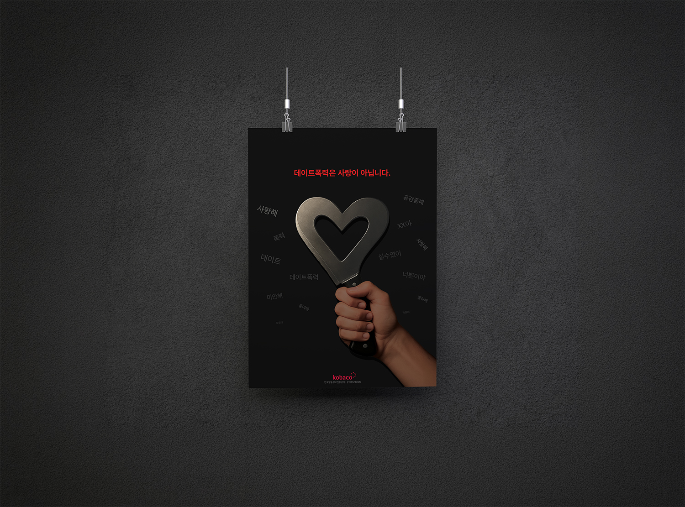

Editorial Design
사회적 메시지를 시각 언어로 전달하는 공익광고 포스터 디자인 프로젝트입니다.
강렬한 임팩트를 주는 동시에 메시지가 명확히 전달되도록, 최소한의 요소로 최대한의 표현을 끌어내는 방향으로 접근했습니다. 타이포그래피와 이미지의 관계를 실험하며 시선을 끄는 구도를 탐구했습니다.

전달할 사회적 메시지와 콘셉트 정의. 강렬한 임팩트와 명확한 전달 사이의 균형점을 먼저 설정했습니다.
시각적 은유와 구도 탐색. 최소한의 요소로 최대한의 표현을 끌어내는 조형 방법을 실험했습니다.
타입과 이미지의 관계 설계. 텍스트 자체가 그래픽 요소가 되는 시각적 긴장감을 만들었습니다.
임팩트 극대화 및 최종 완성. 색상, 여백, 무게감을 조율하며 메시지가 한 눈에 꽂히는 결과를 완성했습니다.